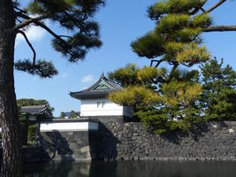

Almost everywhere you go in Japan, you will find scenes of amazing beauty.
 The Tokyo Imperial Palace is the residence of the Emperor of Japan. It is on the site of the former Edo Castle, built in 1457. Most of those structures disappeared during the Meiji era (1868-1912), and much of it was destroyed in 1945 in the firebombing of Tokyo, but was rebuilt in the style of the old palace. Today, the east part of the palace grounds are the public East Garden. The Imperial Household Agency, which has been in charge of state matters that concern the Imperial Family since 700 CE, is also in the public east area of the palace. The rest of the palace is closed to the public, though reserved guided tours are available.
If you are in Tokyo and would like to visit the palace, take public transportation to Tokyo Station; the palace is a short walk from there. Be sure to take some time to look at Tokyo Station as well; some of the architecture from its opening in 1914 is still visible.